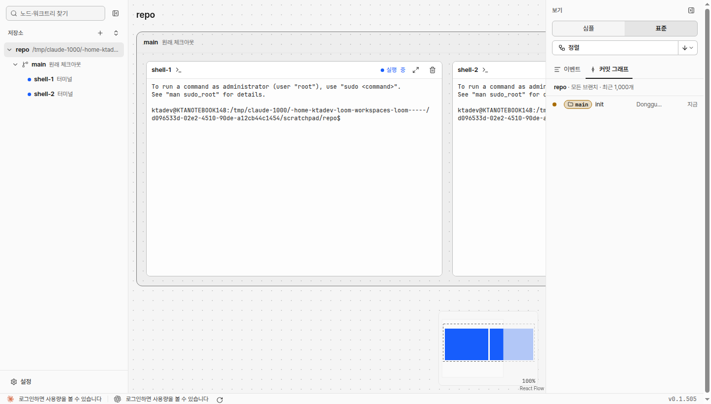

문서 ID: M17응답할 곳: 총괄 · loom 총괄연 담당: 총괄 · loom 총괄v2 · 2026-10-21
사람 응답 대기 알림
사람 지시: “에이전트가 사람에게 승인 또는 선택을 하게끔 하는 질문을 loom 시스템에서 표준화 하여, 사람이 응답하거나, 승인해야하는 부분이 생기면 알림이 발생하여 해당 알림 클릭하면 질문이 발생한 노드로 이동할 수 있게 해줘”. 점선이 바뀌는 곳이다. 답은 지금처럼 노드 터미널에 쓴다.
① 지금 화면 시험 데몬 v0.1.505

- 노드가 사람을 기다려도 화면에 표시가 없다. 카드 터미널을 직접 열어야 안다.
② 질문이 생김 그래프가 다른 곳을 보는 중
repo
총괄Claude
코디-화면Claude
워커-1Codex
총괄실행 중
● 자식 결과를 기다립니다.
코디-화면 · 질문목업 A·B 가운데 어느 쪽으로 할까요?
워커-1 · 승인 요청명령 실행을 승인해야 합니다
- 오른쪽 위 알림: 기다리는 노드마다 하나. 최근 3개만 보이고 나머지는 「+n」 줄 하나로 줄인다. 「질문」은 에이전트가 쓴 한 줄, 「승인 요청」은 CLI의 권한·승인 창이다.
- 사이드바: 기다리는 노드의 점이 주황 고리로 바뀐다.
- 알림을 닫는 단추는 없다. 답하면 사라진다(아래 ⑤).
③ 알림을 클릭함 사이드바 클릭과 같은 이동
repo
총괄Claude
코디-화면Claude
워커-1Codex
코디-화면응답 대기
● 목업 두 판을 만들었습니다.
? 목업 A·B 가운데 어느 쪽으로 할까요?
❯ 1. A — 알림을 오른쪽 위에
2. B — 알림을 아래 상태 줄에
Enter로 고르기 · Esc 취소
코디-화면 · 질문목업 A·B 가운데 어느 쪽으로 할까요?
워커-1 · 승인 요청명령 실행을 승인해야 합니다
- 그래프가 그 노드로 옮겨 가고 카드를 고른다. 사이드바도 그 노드를 고른다. 터미널에 입력 초점이 간다.
- 기다리는 카드: 주황 테두리, 상태 칸은 「응답 대기」.
④ loom 창이 가려져 있음 브라우저·Windows 앱 알림
loom
코디-화면 · 질문
목업 A·B 가운데 어느 쪽으로 할까요?
- 창이 보이지 않을 때만 시스템 알림을 띄운다. 클릭하면 loom 창이 앞으로 오고 ③이 된다.
- 알림 허용은 사람이 ②의 알림을 처음 클릭할 때 한 번만 묻는다. 화면을 열 때는 묻지 않는다. 허용하지 않으면 ②만 보인다.
⑤ 답함 노드 터미널에 입력
repo
총괄Claude
코디-화면Claude
워커-1Codex
코디-화면실행 중
● 목업 두 판을 만들었습니다.
⎿ A — 알림을 오른쪽 위에
● A로 구현합니다.
워커-1 · 승인 요청명령 실행을 승인해야 합니다
- 사람이 그 터미널에 키를 입력하면 알림·주황 표시가 사라진다. 노드가 끝나도 사라진다.
승인할 것
| 항목 | 권장안 | 다른 안 |
|---|---|---|
| ②~⑤ 화면과 문구 | 이대로 | — |
| 에이전트가 묻는 표준 | 권장: loom ask "<질문 한 줄>" 뒤 턴을 끝낸다. 답은 터미널에 쓴다. CLI 권한·승인 창은 자동으로 알린다 | 화면에 따로 답하는 창을 둔다(부품이 늘고 터미널과 겹친다) |
| 누가 사람에게 묻나 | 권장: 사람이 띄운 노드(총괄)만 loom ask. 코디·워커는 지금처럼 부모에게 묻는다. 권한 창은 모든 노드가 알린다 | 모든 노드가 사람에게 바로 묻는다 |
| 알림 닫기 | 권장: 닫는 단추 없음. 답하면 사라진다 | × 단추로 숨긴다(카드 표시는 남는다) |